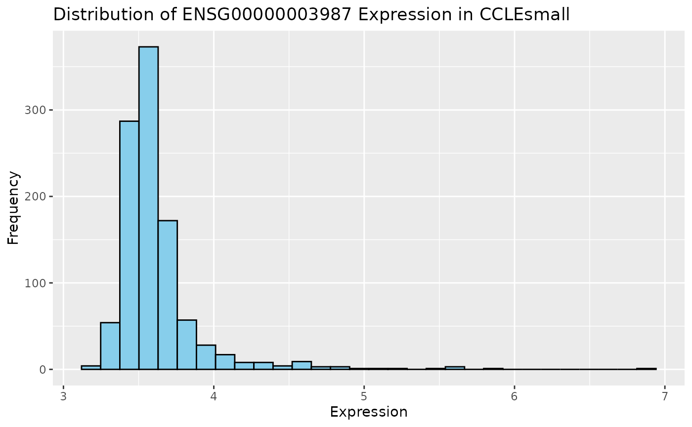

Module 4: Pharmacogenomics for biomarker discovery - Advanced analysis
Your name
Your institutionyour.email@somewhere.com
16 October 2024
Source:vignettes/Module4.Rmd
Module4.RmdIntroduction and Objectives
This workshop provides an overview of meta-analysis techniques in pharmacogenomics. By the end of this lab, participants will be able to:
- Execute a meta-analysis using multiple PharmacoSets to evaluate a biomarker of interest across different cancer types.
- Generate and interpret forest plots to visualize effect sizes.
- Perform subgroup analyses using a small subset of the CCLE dataset.
- Understand the preprocessing steps required for pharmacogenomic data.
- Assess the assumptions and model diagnostics for linear regression models.
Data Acquisition and Preparation
We will use smaller versions of the PharmacoSets for the workshop to minimize processing time. Before diving into the analysis, let’s normalize the data and address any missing values.
Exploratory Data Analysis (EDA)
Before performing the analysis, let’s explore the data to understand its characteristics.
# Summary statistics
gene <- "ENSG00000003987"
gdsc_rna_data <- summarizeMolecularProfiles(GDSCsmall, mDataType = "rna", features = gene) %>% assay()
#> | | | 0% | |======================================================================| 100%
ccle_rna_data <- summarizeMolecularProfiles(CCLEsmall, mDataType = "rna", features = gene) %>% assay()
# Distribution plots
ggplot(data = t(ccle_rna_data), aes_string(x = gene)) +
geom_histogram(bins = 30, fill = "skyblue", color = "black") +
labs(title = stringr::str_c("Distribution of ", gene, " Expression in CCLEsmall"), x = "Expression", y = "Frequency")
Extract Biomarker Data
Let’s extract gene expression and drug response data for a biomarker
of interest, e.g., GeneX.
Effect Size Calculation
Calculate the effect size for each dataset using linear models and check the assumptions of the model.
# Function to compute effect size and check model diagnostics
computeEffectSize <- function(study, exp_data, drug_response, drug = "Erlotinib", gene = "ENSG00000003987") {
drug_response <- drug_response %>%
t() %>%
as.data.frame() %>%
select(all_of(drug))
drug_response <- na.omit(drug_response) # this contains auc values
model_data <- merge(drug_response, exp_data, by = "row.names")
colnames(model_data) <- c("cells", "auc", "GeneExpr")
model <- lm(auc ~ GeneExpr, data = model_data)
coef <- summary(model)$coefficients["GeneExpr", ]
effect <- data.frame(EffectSize = coef["Estimate"], SE = coef["Std. Error"], Study = study)
rownames(effect) <- NULL
return(effect)
}
# Compute effect sizes
ccle_effect <- computeEffectSize(study = "ccle", exp_data = t(ccle_rna_data), drug_response = ccle_drug_data_auc)
gdsc_effect <- computeEffectSize(study = "gdsc", exp_data = t(gdsc_rna_data), drug_response = gdsc_drug_data_auc)Combine Effect Sizes and Perform Meta-Analysis
We will combine the effect sizes from GDSCsmall and
CCLEsmall to perform a meta-analysis.
# Combine effect sizes
effects <- rbind(ccle_effect, gdsc_effect)
# Perform meta-analysis
meta.result <- metagen(TE = effects$EffectSize, seTE = effects$SE, data = effects, sm = "SMD")Visualization with Forest Plots
Generate and interpret a forest plot to visualize the effect sizes.
# Generate forest plot
forest(meta.result)
# Enhanced forest plot with ggplot2
forest_data <- data.frame(
Study = effects$Study,
EffectSize = effects$EffectSize,
LowerCI = effects$EffectSize - 1.96 * effects$SE,
UpperCI = effects$EffectSize + 1.96 * effects$SE
)
ggplot(forest_data, aes(x = EffectSize, y = Study)) +
geom_point(size = 3) +
geom_errorbarh(aes(xmin = LowerCI, xmax = UpperCI), height = 0.2) +
geom_vline(xintercept = meta.result$TE.random, linetype = "dashed", color = "red") +
labs(
title = "Meta-Analysis of GeneX Expression and Drug Response",
x = "Effect Size",
y = "Study"
) +
theme_minimal()
#> Warning: Removed 1 row containing missing values or values outside the scale range
#> (`geom_errorbarh()`).
Subgroup Analysis
We will now conduct a subgroup analysis using a subset of the
CCLEsmall dataset.
# TODO: To debug:
# Load dataset
# data("CCLEsmall")
#
# # Extract drugs and cells
# CCLEdrugs <- treatmentNames(CCLEsmall)
# CCLEcells <- sampleNames(CCLEsmall)
#
# # Subset to a specific drug and cell line
# pSet <- subsetTo(CCLEsmall, drugs = CCLEdrugs[1], cells = CCLEcells[1])
#
# # Display subset
# dim(pSet)
#
# # Subgroup analysis for tissue-specific biomarker
# gene.expr <- summarizeMolecularProfiles(pSet, mDataType = 'rna', features = gene)
# ccle_effect <- computeEffectSize(study = "ccle", exp_data = t(gene.expr) , drug_response = drug.response)Interactive Exercise
Task: Compare the fixed-effect and random-effects
models using the effect sizes computed above. Perform a subgroup
analysis to evaluate the effect of GeneX on drug response
specifically for the chosen drug and cell line.
Additional Considerations
-
Heterogeneity: Examine the variability across different studies. Use the I² and Q-statistics to assess heterogeneity.
Limitations: Discuss the limitations of meta-analysis, such as the variability between studies and the challenges of combining datasets from different sources.